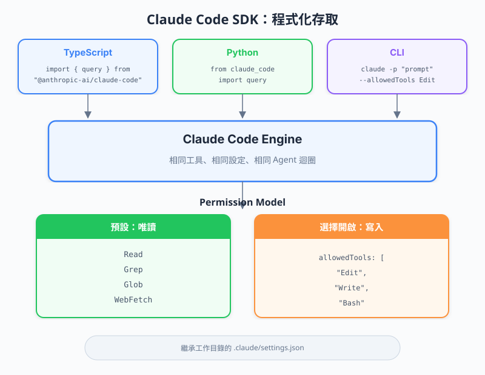

| 項目 | 內容 |
|---|---|
| 考試對應 | D2 — Tool Integration & MCP（佔 20%）、D3 — Claude Code Configuration & Workflows（佔 20%）、D1 — Agentic Architecture（佔 27%） |
| Task Statements | 2.4（MCP integration — SDK 以程式化方式擴展 Claude Code）、3.6（CI/CD integration — SDK 驅動自動化工作流）、1.1（agentic loops — SDK 以程式化方式執行完整 agentic loop） |
| 課程來源 | claude-code-in-action / 06-sdk-and-wrap-up / Lesson 20 |
Claude Code SDK 讓你從 TypeScript、Python 或 CLI 以程式化方式執行 Claude Code — 繼承所有設定和權限 — 預設為唯讀模式，需要透過 allowedTools 明確授權才能寫入，是互動式 Claude Code 與自動化 pipeline 之間的橋樑。

終端機裡的 Claude Code 是互動式的 — 人類打字、看回應。SDK 把人從迴圈中移除：你的程式碼送出 prompt 並處理回應。
關鍵點：SDK 不是獨立產品。它底層跑的是完全相同的 Claude Code，這意味著：
CLAUDE.md 檔案.claude/settings.json 的權限設定💡 核心洞察
SDK 就是沒有終端機 UI 的 Claude Code。相同引擎、相同設定、相同能力 — 不同介面。
SDK 透過三種介面提供：
import { query } from "@anthropic-ai/claude-code";
const messages = await query({
prompt: "這個專案中有哪些重複的 query？",
options: {
maxTurns: 10,
},
});
for await (const message of messages) {
if (message.type === "text") {
console.log(message.content);
}
}
import subprocess
import json
result = subprocess.run(
["claude", "--print", "--output-format", "json", "Find duplicate queries"],
capture_output=True, text=True
)
response = json.loads(result.stdout)
echo "Find duplicate queries" | claude --print --output-format json
🎬 講師影片重點
講師先示範 TypeScript SDK，因為它提供最豐富的 API，支援 async iteration 逐筆讀取訊息。Python 和 CLI 則是透過 subprocess 呼叫claudeCLI binary。
這是 SDK 中最重要的安全概念：
// 預設：Claude 只能讀取檔案，不能修改
const messages = await query({
prompt: "分析這個 codebase",
});
// 明確授權寫入：必須指定 allowedTools
const messages = await query({
prompt: "在 package.json 加入一個 test script",
options: {
allowedTools: ["Edit", "Write", "Bash"],
},
});
為什麼預設唯讀？ 程式化執行時沒有人類在迴圈中，沒有人可以批准危險操作。SDK 預設採取最安全的姿態。
| 權限等級 | Claude 可以做什麼 | 使用場景 |
|---|---|---|
預設（無 allowedTools） |
讀取檔案、分析程式碼、回答問題 | Code review、分析、文件查詢 |
allowedTools: ["Edit"] |
讀取 + 修改既有檔案 | 自動重構、程式碼修正 |
allowedTools: ["Edit", "Write"] |
讀取 + 修改 + 建立檔案 | 程式碼生成、Scaffolding |
allowedTools: ["Edit", "Write", "Bash"] |
完整存取包含 shell 指令 | CI/CD pipeline、Build 自動化 |
🎯 考試重點
最小權限原則適用：只授予 SDK 呼叫實際需要的工具。Code review pipeline 不應該有Bash存取權限。
核心模式是：import -> query -> iterate
import { query } from "@anthropic-ai/claude-code";
// 1. 發送 prompt（啟動 agentic loop）
const conversation = await query({
prompt: "找出 src/ 中所有重複的資料庫 query",
options: {
maxTurns: 10, // 限制 agentic loop 迭代次數
allowedTools: [], // 唯讀（預設）
},
});
// 2. 非同步迭代訊息
for await (const message of conversation) {
switch (message.type) {
case "text":
console.log("Claude 說:", message.content);
break;
case "tool_use":
console.log("Claude 使用工具:", message.name);
break;
case "error":
console.error("錯誤:", message.content);
break;
}
}
query() 函式回傳一個 async iterable — 訊息會隨著 Claude 思考和行動串流進來，就像終端機體驗一樣。
💡 核心洞察
maxTurns控制 Claude 可以執行多少次 agentic loop 迭代。每個 turn 可能包含多個 tool call。設太低可能讓 Claude 無法完成複雜任務；設太高可能造成不必要的成本。
SDK 的真正威力在 pipeline 整合中展現：
// pre-commit hook：檢查 secrets
const result = await query({
prompt: "檢查 staged 檔案中是否有寫死的 secrets 或 API keys",
options: { maxTurns: 5 },
});
// Post-build：生成 changelog
const result = await query({
prompt: "比較 HEAD 與上一個 tag，生成一筆 changelog 條目",
options: { maxTurns: 10 },
});
// PR review bot
const result = await query({
prompt: `Review 這個 PR diff 找出問題:\n${prDiff}`,
options: {
maxTurns: 15,
allowedTools: [], // 唯讀用於 review
},
});
🎬 講師影片重點
講師示範了兩步驟工作流：先用唯讀模式呼叫 SDK 找出重複 query，再用allowedTools: ["Edit"]修改package.json。這展示了漸進式權限提升模式。
SDK 繼承 .claude/settings.json 的所有設定：
{
"permissions": {
"allow": ["Read", "Glob", "Grep"],
"deny": ["Bash(rm *)"]
}
}
即使你的 SDK 程式碼傳入 allowedTools: ["Bash"]，settings 中的 deny 規則仍然適用。這是縱深防禦：
allowedTools — 呼叫者授予的權限.claude/settings.json — 專案允許的權限🎯 考試重點
SDK 權限是呼叫者授予（allowedTools）和設定允許的交集。如果 settings denyBash(rm *)，即使有allowedTools: ["Bash"]，SDK 也無法執行rm。
| 概念 | 重點 | 考試相關性 |
|---|---|---|
| SDK 用途 | 以程式化方式執行 Claude Code，無需終端機 UI | D1 1.1 — 自動化中的 agentic loop |
| 三種介面 | TypeScript（主要）、Python、CLI | D2 2.4 — 程式化工具整合 |
| 預設唯讀 | 無寫入權限，除非 allowedTools 明確授權 |
D3 3.6 — 安全的 CI/CD 整合 |
| 設定繼承 | SDK 遵守 .claude/settings.json 和 CLAUDE.md |
D3 3.6 — 設定傳播 |
| Async Iteration | for await (const msg of conversation) 模式 |
D1 1.1 — 串流 agentic 回應 |
| maxTurns | 控制 agentic loop 深度 | D1 1.1 — 迴圈終止控制 |
| Pipeline 整合 | Git hooks、CI/CD、build scripts、自動化 | D3 3.6 — CI/CD 整合 |
| # | 正面 | 背面 | 記憶錨點 |
|---|---|---|---|
| 1 | Claude Code SDK 的預設權限等級是什麼？ | 唯讀。寫入需要透過 allowedTools 明確授權。 |
「沒有鑰匙就不能進」— SDK 預設門是鎖的 |
| 2 | 存取 Claude Code SDK 的三種方式？ | TypeScript（@anthropic-ai/claude-code）、Python（subprocess）、CLI（pipe 模式） |
三扇門通往同一個房間 |
| 3 | SDK 中 maxTurns 控制什麼？ |
Claude 每次 query 可以執行的 agentic loop 迭代次數 | 就像賽車設定圈數上限 |
| 4 | SDK 會遵守 .claude/settings.json 嗎？ |
會 — 它繼承所有設定，包含 allow/deny 規則 | 相同引擎、相同規則手冊 |
| 5 | 如何在 TypeScript SDK 中授予寫入權限？ | 在 options 中傳入 allowedTools: ["Edit", "Write"] |
明確的鑰匙開明確的門 |
| 6 | CI/CD code review pipeline 推薦的權限模型？ | 唯讀（不設 allowedTools）— review 不需要寫入權限 |
稽核員，不是編輯者 |
| 7 | TypeScript SDK 的核心使用模式？ | Import query -> 帶 prompt 和 options 呼叫 -> async iterate 訊息 |
Import、query、iterate |
| 8 | SDK 為什麼預設唯讀？ | 沒有人類在迴圈中批准危險操作 — 最小權限原則 | 沒有主管就不給剪刀 |
團隊想在 CI pipeline 中用 Claude Code SDK 加入自動化 code review 步驟。Review 只分析 PR，絕不修改程式碼。哪個設定正確？
allowedTools: ["Read", "Grep", "Glob"]allowedTools: []（或完全省略這個欄位）allowedTools: ["Edit"] 搭配 settings 中的 deny 規則allowedTools: ["Bash"] 來執行分析指令你用 SDK 自動化 dependency 更新。Claude 需要讀取 package.json、檢查過期的 dependency 並更新它們。執行後你發現 Claude 在分析後停下，沒有進行修改。最可能的原因是什麼？
maxTurns 設太低allowedTools 授權 Edit）.claude/settings.json deny 了 Write 權限